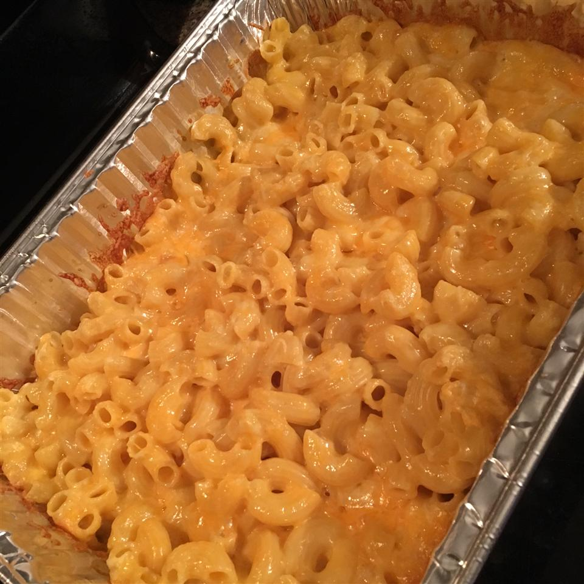

Macaroni Cheese

Description
Don't you wish you could make macaroni cheese like momma or grandma used to make?
Well want no more! With this simple step-by-step recipe anyone, even you, can knock those old
crusty relatives macaroni cheese outta the park!
Ingredients
- 500g macaroni pasta
- 1 can condendsed cheddar cheese soup
- 1 cup milk
- 250g grated red leicester cheese
Method
- Preheat oven to 175 degrees C (350 degrees F).
- Bring a large pot of slightly salted water to the boil. Add pasta and
cook for 8 to 10 minutes or until al dente; drain.
- Place macaroni in an appropriately sized casserole dish. Stir in cheese soup
and milk until well combined. Sprinkle with grated cheese
- Bake 25 to 30 minutes, or until cheese is golden brown and bubbly.